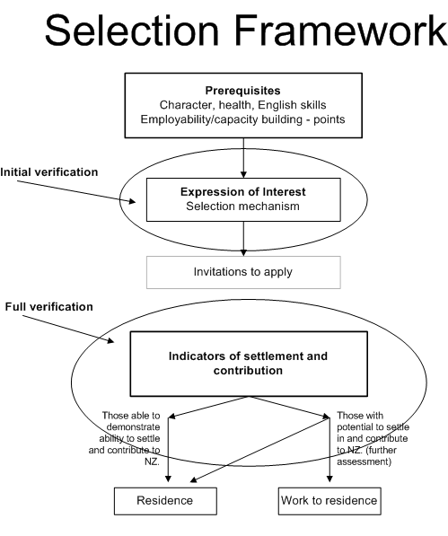

|
SM2 Overview of Skilled Migrant Category (29/11/2010)
- A person who is interested in applying for a resident visa under the Skilled Migrant Category must complete an Expression of Interest (EOI) form in the prescribed manner.
- EOIs which meet prerequisites for health, character, English language and age, and have a point score of 100 or more points are entered into the Pool of EOIs.
- Points for employability and capacity building factors are claimed by a person expressing interest in accordance with the requirements set out in the Skilled Migrant Category.
- EOIs in the Skilled Migrant Category Pool are selected from that Pool periodically on the Government's behalf by the Department of Labour.
- Selections from the Pool are made in the following manner:
- EOIs that have total points of 140 or more are selected automatically from the Pool;
- EOIs that have total points of 100 or more but less than 140, and include points for offers of skilled employment or current skilled employment in New Zealand, are selected (according to their points ranking) in sufficient numbers to meet the requirements of the Skilled/Business Stream of the New Zealand Residence Programme (NZRP) at the time of that selection (subject to any adjustment to the number or distribution of places in the NZRP determined by the Government).
- If, following the selection process set out at (e) above, further places are available in the Skilled/Business Stream of the NZRP at the time of that selection (subject to any adjustment to the number or distribution of places in the NZRP determined by the Government), additional EOIs may be selected from the Pool on the basis of criteria set from time to time by the Minister of Immigration, having regard to the objectives of the Skilled Migrant Category. Those criteria are specified at SM3.15.1.
- A selected EOI may result in an invitation to apply for a resident visa under the Skilled Migrant Category being granted, subject to an assessment of the credibility of the information provided in the EOI and whether the EOI indicates the presence of any health or character issues that may adversely affect the ability of the person expressing interest to be granted a resident visa under the Skilled Migrant Category.
- Whether, in any particular case, an EOI has been selected from the Pool, it may not result in an invitation to apply for a resident visa under the Skilled Migrant Category.
- Only a person invited to apply may apply for a resident visa under the Skilled Migrant Category.
- If a person is invited to apply, information provided in the EOI, and any further evidence, information and submissions provided by the applicant (including information concerning ability or potential to successfully settle in and contribute to New Zealand), will form the basis for determination of a subsequent application for a resident visa under the Skilled Migrant Category.
- Applications for a resident visa, resulting from an invitation to apply, must include:
- information and evidence to support the claims made in the EOI; and
- information concerning any relevant fact (including any material change in circumstances that occurs after the EOI was selected) if that fact or change in circumstances may affect the decision on the application. Such a relevant fact or change in circumstances may relate to the principal applicant or another person included in the application, and may relate to any matter relevant to Skilled Migrant Category.
- Applications will be assessed against instructions set out in sections SM4 to SM21 of the Skilled Migrant Category.
- Principal applicants under the Skilled Migrant Category will be assessed against:
- health, character and English language requirements; and
- employability and capacity building requirements; and
- any criteria set from time to time by the Minister of Immigration which was the basis for selection from the Pool (see SM3.15.1); and
- settlement and contribution requirements.
- Assessment against settlement and contribution requirements (see SM21) will take into consideration the application as a whole including information gained at interview, if an interview is conducted. The assessment concerning settlement and contribution may result in:
- the grant of a resident visa; or
- deferral of the decision on the resident visa application and the grant of a work visa to enable a principal applicant to obtain an offer of ongoing skilled employment in New Zealand; or
- decline of the resident visa application.
- If a decision is deferred on the resident visa application and the principal applicant becomes established in ongoing skilled employment in New Zealand, the application for a resident visa will be approved.

Effective 29/11/2010
|